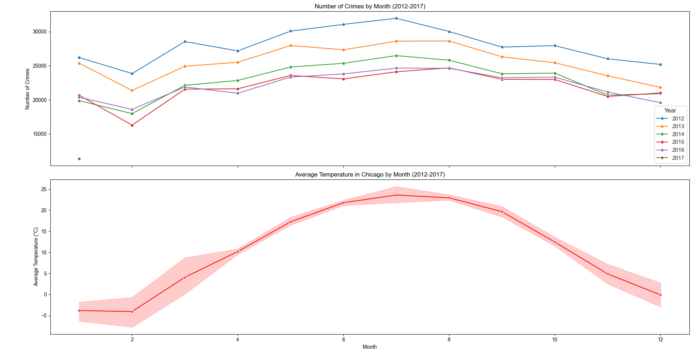
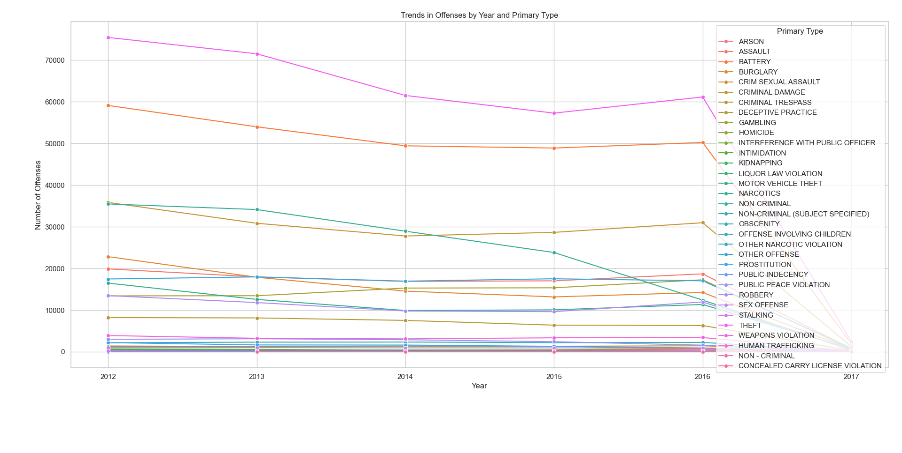
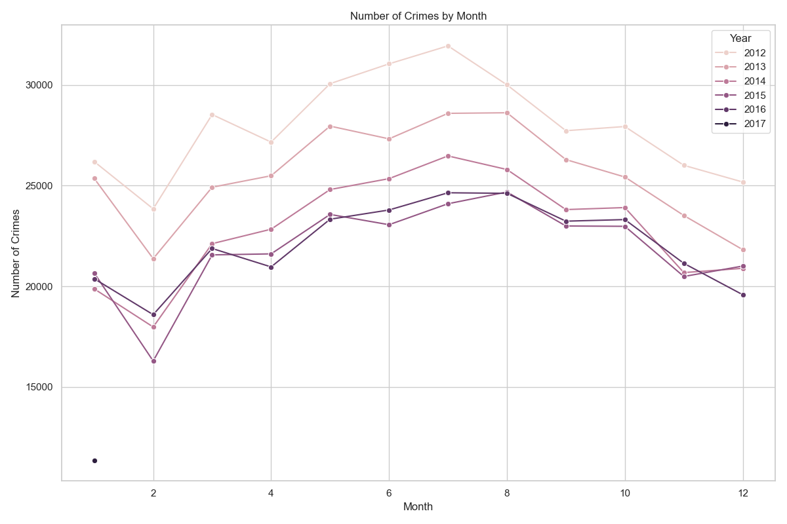

This was the final week of my project, so I had to wrap things up. I spent time finding the right data
set, which was key for my analysis. Once I got the data, I looked for trends and patterns that supported
my work. After analysing everything, I wrote down my findings.
By the end of the week, I had decided to work on two datasets linked as follows:
Chicago Crime
Data
&
US
City Weather Data

Python
import pandas as pd
import seaborn as sns
import matplotlib.pyplot as plt
# Read the crime data CSV file
crime_file_path = 'Chicago_Crimes_2012_to_2017.csv'
df_crime = pd.read_csv(crime_file_path)
# Read the weather data CSV file
weather_file_path = 'US_City_Temp_Data.csv'
df_weather = pd.read_csv(weather_file_path)
# Convert Date columns to datetime
date_format = '%m/%d/%Y %I:%M:%S %p'
df_crime['Date'] = pd.to_datetime(df_crime['Date'], format=date_format)
df_weather['time'] = pd.to_datetime(df_weather['time'])
# Extract month and year from Date columns
df_crime['Month'] = df_crime['Date'].dt.month
df_crime['Year'] = df_crime['Date'].dt.year
df_weather['Month'] = df_weather['time'].dt.month
df_weather['Year'] = df_weather['time'].dt.year
# Filter weather data for Chicago and the years 2012-2017
df_weather = df_weather[(df_weather['Year'] >= 2012) & (df_weather['Year'] <= 2017)]
df_weather_chicago = df_weather[['Year', 'Month', 'chicago']].rename(columns={'chicago': 'Avg_Temp'})
# Grouping crime data by month and year to count occurrences
df_grouped_crime = df_crime.groupby(['Year', 'Month']).size().reset_index(name='Counts')
# Merging crime data with weather data
df_combined = pd.merge(df_grouped_crime, df_weather_chicago, on=['Year', 'Month'])
# Setting up the subplots
fig, ax1 = plt.subplots(2, 1, figsize=(12, 12), sharex=True)
sns.set(style="whitegrid")
# Creating the line plot for crime data
sns.lineplot(data=df_combined, x='Month', y='Counts', hue='Year', marker='o', palette='tab10', ax=ax1[0])
ax1[0].set_title('Number of Crimes by Month (2012-2017)')
ax1[0].set_ylabel('Number of Crimes')
# Creating the line plot for weather data
sns.lineplot(data=df_combined, x='Month', y='Avg_Temp', marker='X', color='red', ax=ax1[1])
ax1[1].set_title('Average Temperature in Chicago by Month (2012-2017)')
ax1[1].set_xlabel('Month')
ax1[1].set_ylabel('Average Temperature (°C)')
plt.tight_layout()
plt.show()
At the beginning of the week, I worked on a dataset related to an anime streaming service. This dataset
included information about all the anime available on the platform, their reviews and various data
points. It contained details about each user, including the films they watched and their average
reviews. I used this data to identify patterns, but despite numerous attempts and the creation of many
graphs, I couldn't find anything significant. Eventually, I abandoned that dataset and looked for a new
one. That's when I came across a dataset on crimes in Chicago, which included every reported incident
from 2001 to 2017. This dataset contained over a million entries, and I figured I could extract some
interesting insights from it.

I analysed the data and created graphs to identify patterns. I generated multiple data points and
discovered interesting results, but the most notable was the graph below, which illustrated the total
number of crimes each year, plotted against each month. I observed that not only did crime rates decline
over the years, but they also tended to decrease around February and increase in July. I suspected this
was related to the onset of summer in Chicago.

To support my hypothesis, I gathered another dataset that included weather data for U.S. cities,
including Chicago, from 2012 to 2017. I incorporated this weather data into my previous graph and found
that it aligned with my findings. This led me to conclude that crime rates in Chicago tend to increase
during the summer months.
If I were to redo this project, how would I approach it differently?
My project timeline was unbalanced; I left almost no time to complete the work and spent most of my time
bogged down. While finding a good dataset is important, I focused too much on that aspect. If I were to
do this project again, I would create a detailed plan outlining what I need to accomplish each week.
This approach would help me understand what tasks need to be completed and allow me to break the larger
project into smaller, more manageable parts. This would make me feel less overwhelmed and prevent me
from avoiding the work because it’s too difficult.
Did I encounter any challenges in identifying trends and patterns? How did I overcome them?
I had difficulties identifying significant patterns in the anime dataset. After several attempts, I
switched to a different dataset—specifically, the Chicago crime data. This new dataset revealed clearer
trends, especially when combined with weather data. This experience taught me the importance of being
flexible and willing to pivot when necessary.
How did I handle unexpected challenges or setbacks during the project?
Despite conducting several analyses, I encountered setbacks with the anime dataset, which did not provide
significant insights. Rather than getting stuck, I decided to switch to the Chicago crime dataset. This
change enabled me to uncover meaningful patterns and successfully complete my analysis on time.